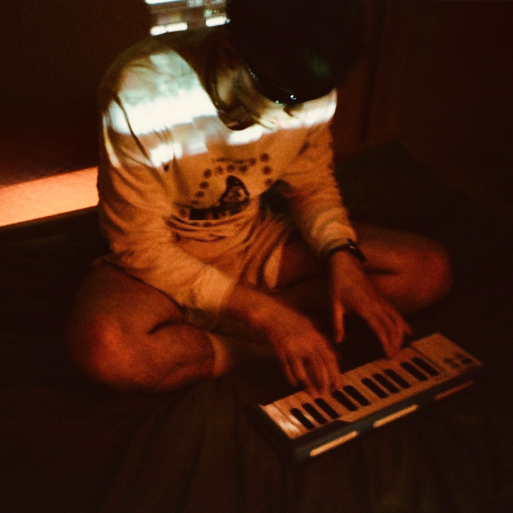

Featured mix
I Like to Smoke in Silence After Raves
I spent about four months choosing and rearranging these 30 tracks until the mix felt right.
[Breakbeat / bass / rave / no AI]
I was born in Eastern Europe, later lived in Berlin and Barcelona, and raved around the world. All of that shaped my taste: Eastern European melancholy, German electronic music, the restless energy of UK bass music from jungle and drum and bass to garage and hardcore, and a constant urge to dig for new genres and sounds from different places.
I started with Eurodance as a kid, then got obsessed with The Prodigy, Fatboy Slim, The Chemical Brothers, Underworld, The Future Sound of London and Meat Beat Manifesto, alongside West Coast rap. Jungle and drum and bass led me to Goldie, LTJ Bukem, Photek, Source Direct and 4hero. Sade, Seal and Sting mattered just as much, so melody and atmosphere have always been as important to me as drums.
My tracks and DJ sets move through breakbeat, bass, club music, experimental electronic, breaks and rave, with elements of grime and techno. I do not stay inside one genre. I look for connections between different rhythms, scenes and eras.
I make music for pre-parties, clubs, raves and afters, but also for walking alone or sitting on a balcony with a cigarette and thinking about life.

01 / Buy on Bandcamp
Streaming is useful for discovery. If you want to support my work directly, buying a track on Bandcamp makes the biggest difference.
Visit my Bandcamp ↗02 / DJ mixes
Club music, experimental electronic, breaks, grime and techno connected into long-form sets without genre borders.
Featured mix
I spent about four months choosing and rearranging these 30 tracks until the mix felt right.
DJ mix
A loud and restless mix about going out again even when you know better.
03 / Original music
Breakbeat, bass, garage, jungle and experimental electronic tracks, built from scratch in a DAW. I do not use generative AI in music.
Original productions / Spotify
Breakbeat, garage, jungle, techno and melancholic electronic music.
Original productions / SoundCloud
Sketches and original productions from my SoundCloud.
04 / Playlists
Breaks, UK garage, jungle, ambient and leftfield club music I return to and build from.
05 / Articles
Long-form articles about the sounds, scenes, technology and communities behind underground club culture.
 A01Guide / Breakbeat / ~25 min
A01Guide / Breakbeat / ~25 minFrom funk breaks and pirate radio to cracked VSTs and modern bass hybrids.
Read article → A02Guide / Jungle / ~14 min
A02Guide / Jungle / ~14 minPirate radio, dubplates, MC energy and the global return of a distinctly Black British sound.
Read article → A03Timeline / UK music / ~9 min
A03Timeline / UK music / ~9 minTen sounds that travelled from regional underground scenes into global culture.
Read article →